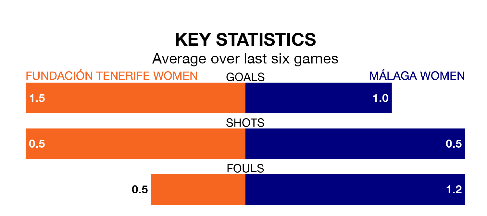

Struggling Málaga Women face Fundación Tenerife Women away on Saturday looking to build on a win in their last league outing.
After securing all three points with a 2-1 victory over Elche Women on March 17, Málaga sit 14th in the Segunda Federación Femenina.
They travel to play a Fundación Tenerife side seventh in the standings, who were held in their last match, 2-2 against Juan Grande Women, on March 16.
Fundación Tenerife are in good form in the Segunda Federación Femenina, with four wins and two draws from their last six games.
With three wins and two draws over that period, Málaga's form is worse – they have taken 11 points from 18, compared to the hosts' 14.
With 34 goals in 23 games so far this season, Fundación Tenerife are scoring more than average in the league with 1.5 goals per game. And they are conceding fewer than average, letting in 16 goals at a rate of 0.7 per game.
The away team are also above average scorers, with 1.4 goals per game, compared to a league average of 1.3. They have conceded 1.3 goals per game.
Updated: 10:19 (UTC), 22/03/24